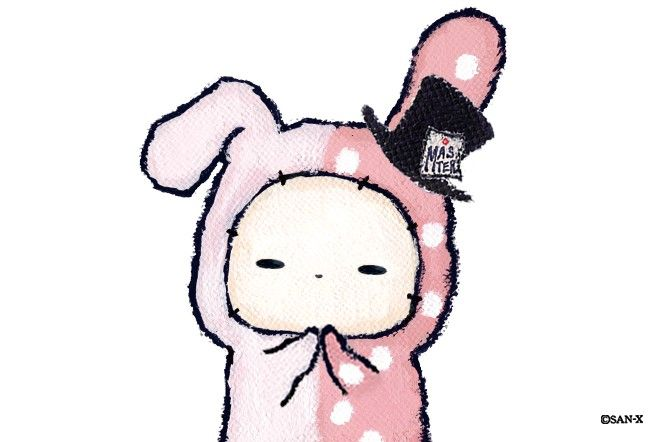

Fasai Tuntisaneepong

Summary
Experience in UX-UI design and knowledge in frontend development. Lookig
for opportunity to bring my knowledge of programming, design, problem
solving skills, and language skills for the growth of the organization as
well as to expand my learning, knowledge, and akills about trend in the IT
and design fields
Education Background
Work experience
-
Frontend developer (Web programmer) - Srikrungbroker Co.,Ltd.
July 2022 - Present
-
Maintains and improving UI of websites which used within the
organization.
-
Maintains and improving mockups and prototypes of websites using Adobe
XD or Figma.
-
Customizes code of each pages using HTML, CSS, JavaScript together
with CSS Front-end Framework like Bootstrap and Javascript framework
like jQuery.
-
Customizes code behind in using C# or Visual Basic .NET (VB.NET)
-
Design, develop, and modified webpages for user to search within
database of the organization following requirements.
Skills
- Responsive Design: 🌟🌟🌟🌟🌟
- HTML: 🌟🌟🌟🌟
- CSS:🌟🌟🌟🌟
- JavaScript: 🌟🌟🌟
- jQuery:🌟🌟🌟🌟
- SQL:🌟🌟🌟
Awards and Certifications
- ใช้ CSS และ SCSS สร้าง Responsive website ตั้งแต่เริ่มต้น! - Udemy (March 2024)
- Google UX Design Specialization - Coursera (May 2023)
- Design a User Experience for Social Good & Prepare for Jobs (May 2024)
- Responsive Web Design in Adobe XD (May 2024)
- Create High-Fidelity Designs and Prototypes in Figma (April 2023)
- Build Wireframes and Low-Fidelity Prototypes (March 2023)
- Conduct UX Research and Test Early Concepts (March 2023)
- Start the UX Design Process: Empathize, Define, and Ideate (Febuary 2023)
- Foundations of User Experience (UX) Design (January 2023)
- Certificate Japanese-Language Proficiency (N3) - The Japan Foundation (August 2022)
Get to know me more